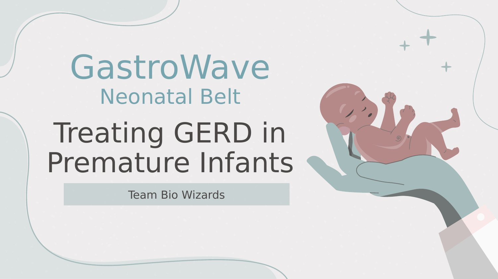
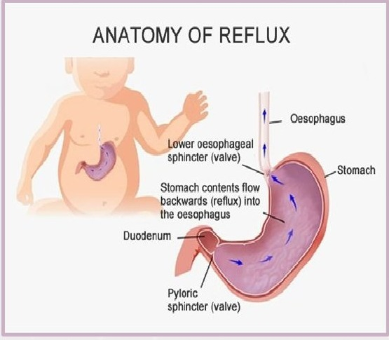
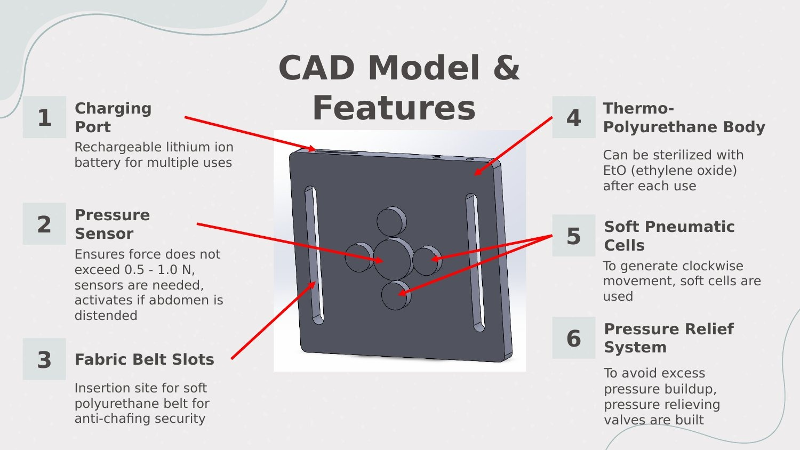
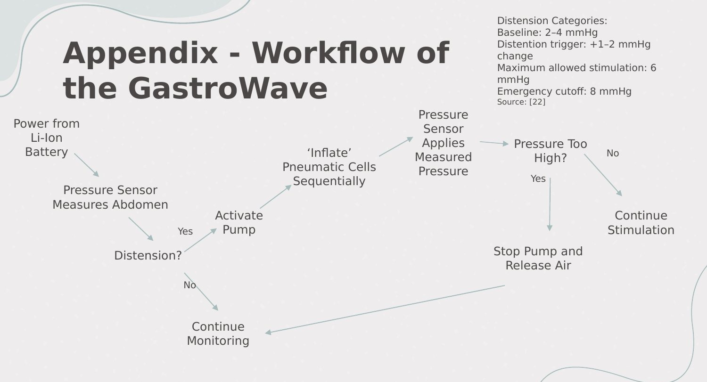
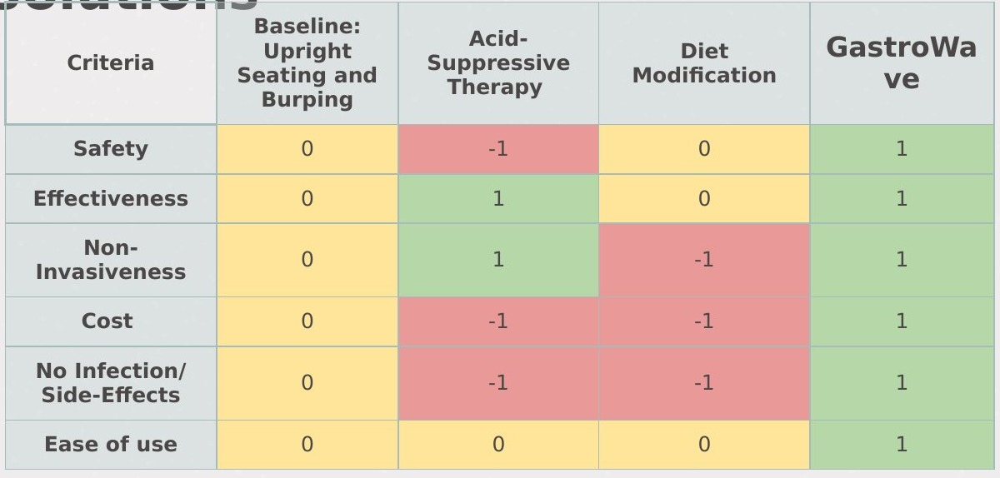
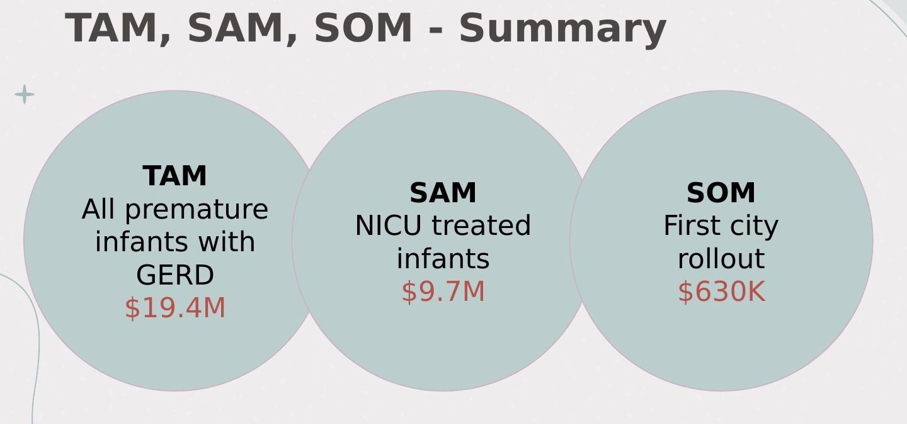
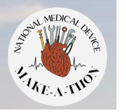

Gastroesophageal Reflux Disease (GERD) is common and serious in premature infants: an immature lower esophageal sphincter and underdeveloped GI motility let stomach contents flow back into the esophagus. In the NICU, frequent reflux episodes drive feeding intolerance, poor weight gain, aspiration risk, and longer hospital stays.

The mechanism comes down to a weak lower esophageal sphincter (LES) combined with high stomach pressure. Premature infants also have incomplete digestive systems, milk stays in the stomach longer, weaker peristalsis is less effective at moving things down, and infants spend most of their time lying flat, all of which push stomach contents back up through the esophagus.
The numbers make the scale clear, roughly 1 in 10 preterm infants is diagnosed with GERD, each averaging 2–3 reflux episodes per hour, and every diagnosed case adds about $70,000 to that baby's hospital stay.
Problem statement: to develop a non-invasive gastric stimulator for premature infants that reduces GERD while addressing the invasiveness, inconsistency, and nurse-dependence of current treatments.
Four hard constraints shaped every design decision: temperature probes and cardiac leads already live on a NICU infant's abdomen, so the device can't interfere with those readings; nurse workflow is tight, so it can't add a lengthy procedure; and it needs to be wearable for extended periods while activating fully on its own.

The belt itself runs on a rechargeable lithium-ion battery, uses a pressure sensor to keep applied force within a strict 0.5–1.0 N safety window, and activates automatically if the sensor detects abdominal distension. Soft pneumatic cells generate a clockwise, wave-like motion, mimicking peristalsis and emulating a gentle physical massage, while a pressure relief system prevents any buildup beyond the safe range. The thermo-polyurethane body can be sterilized with ethylene oxide (EtO) between uses.

Closed-loop control is what keeps this safe to run unsupervised: the pressure sensor continuously monitors the abdomen, only activates the pump when real distension is detected, and automatically shuts off before crossing into unsafe pressure territory.
Current standard of care sits on a severity ladder: burping and upright seating first (the gold standard for mild cases), then feeding modification, then acid-suppressive therapy, with surgery reserved as a rare last resort for the most severe cases. None of these are purpose-built for consistent, hands-off reflux management in the NICU.

Scoring GastroWave against those existing options on safety, effectiveness, non-invasiveness, cost, side effects, and ease of use, it's the only option that scores positively across every single category. Acid-suppressive therapy is effective but loses on non-invasiveness, plus real safety and side-effect tradeoffs. Diet modification struggles on both invasiveness and cost. GastroWave is the only approach that doesn't force a tradeoff between safety, effectiveness, and ease of use.
Target patient population is premature infants under 28 weeks gestation, with hospitals running NICU units as the primary customer, starting in urban U.S. hospitals, then expanding to rural U.S. and global NICUs in low- and middle-income countries.

The full addressable market, every premature infant with GERD, at $100 per device, comes out to $19.4M/year. Narrowing to just NICU-treated infants brings that to a $9.7M serviceable market, and a realistic first-year rollout in one city puts the near-term obtainable market at $630K.
Two existing approaches proved the underlying concept works before we ever started designing: a skin-electrode abdomen stimulator that uses non-invasive electrical stimulation to activate abdominal muscles and promote GI motility, and an FDA-approved abdominal TENS stimulation belt using harnesses to maintain infant positioning. GastroWave's contribution is integrating gastric stimulation with real-time pressure feedback control, something neither existing device does.
GastroWave is a Class II device pursuing the De Novo pathway, there's no predicate device similar enough for standard 510(k) clearance, but it isn't high-risk enough to require full pre-market approval. Given the high-risk NICU patient population, the submission has to demonstrate both that no harm is done and that the safety measures actually work, starting with a 513(g) submission to the FDA for classification feedback, using the FDA-approved TENS muscle stimulation belt as an NSE predicate.

The National Medical Device Make-a-thon (MDM) is a 48-hour intercollegiate medical device design competition that brings undergraduate teams from across the country to a single host university for a weekend of design, mentorship, and pitching. Teams are given a clinical topic and have the weekend to design a device, build it out, and present to a panel of judges drawn from the medical and healthcare industry, alongside workshops, a career fair, and networking with sponsors along the way.
GastroWave competed at the 2025 National MDM, hosted that year at the University of Oklahoma, against 36 teams from universities across the country, placing in the top 12.
The full 40-slide presentation, background, design, competition, regulatory pathway, market analysis, and bill of materials.